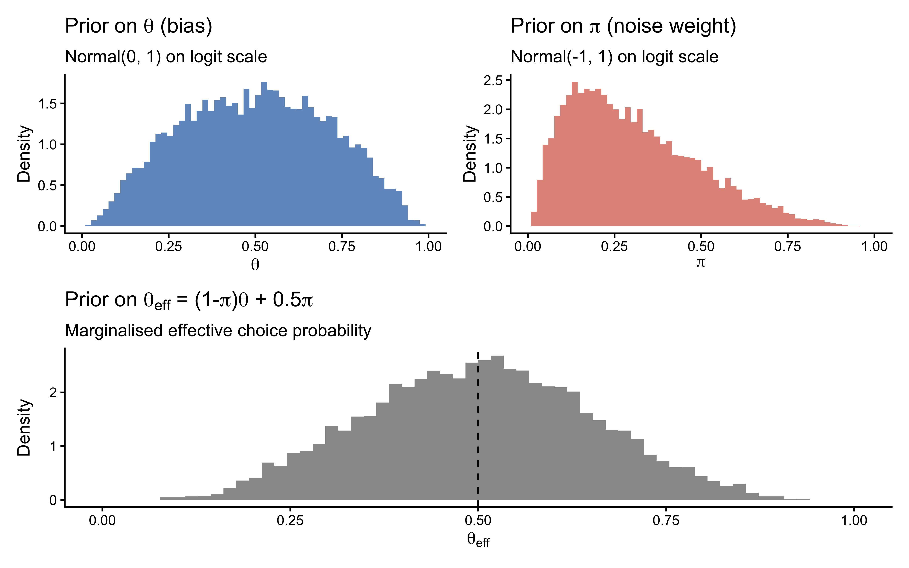
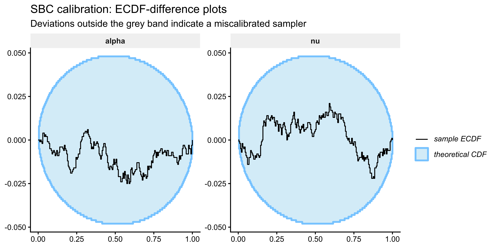
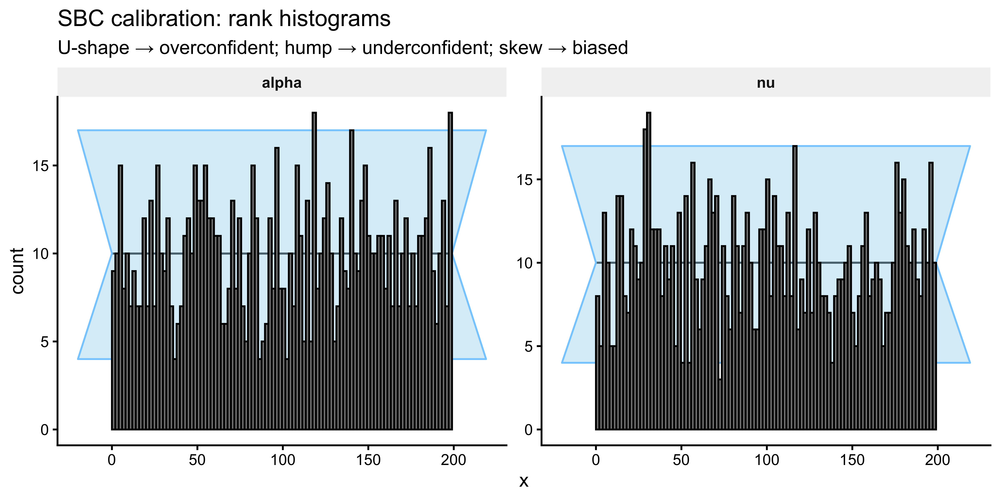
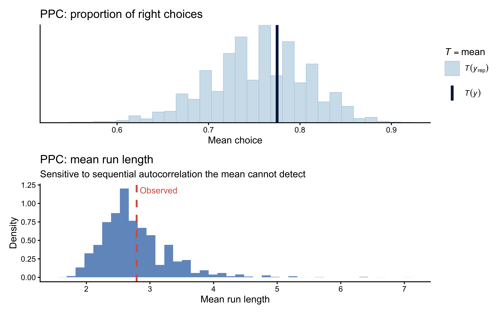
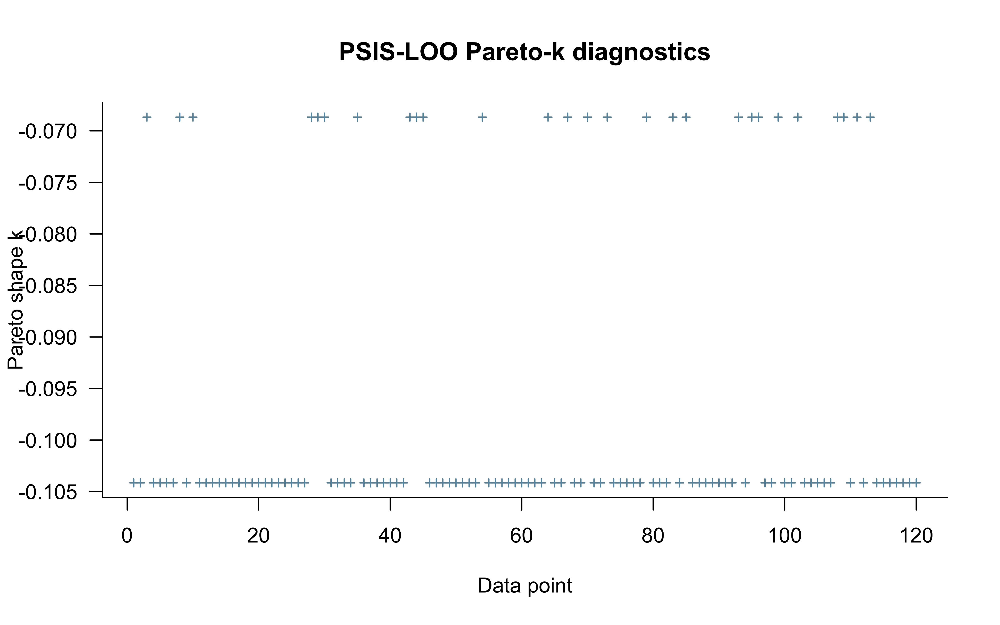
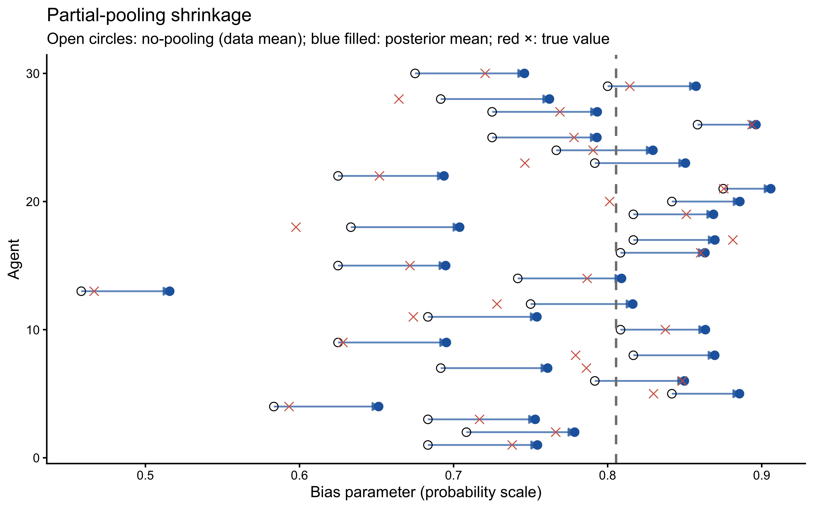

Chapter 9 Mixture Models
📍 Where we are in the Bayesian modeling workflow: Chs. 1–7 modelled behaviour as arising from a single cognitive process per agent. This chapter relaxes that assumption: behaviour can be a weighted mixture of distinct processes (e.g., deliberate strategy and attentional lapses). Mixture models extend the toolkit from Ch. 6 (hierarchical structures) and Ch. 7 (model comparison via LOO) to this new model class. The key new challenge is that discrete latent variables — which process generated this trial? — cannot be sampled by HMC and must be analytically integrated out before any Stan code is written. The full course roadmap is in Ch. 1, Section “The Course Roadmap”.
When we model human cognition and behavior, people do not always follow a single, consistent strategy. A participant in a matching-pennies game might sometimes carefully exploit a detected pattern in the opponent’s behavior, and other times respond essentially at random when attention lapses. Traditional single-process models are structurally misspecified when this is the case: they attribute lapse-driven variance to the strategic parameter, inflating its uncertainty and biasing its location.
Mixture models provide an elegant and principled solution. Rather than assuming behavior reflects one cognitive process, they represent observations as draws from a weighted combination of component distributions, each corresponding to a distinct process. This reframes the question addressed in Chapter 7 — which model is correct? — into a richer question: how much does each process contribute, and for which observations?
Because each component must be marginalized analytically before writing Stan code, mixture models also serve as a concrete introduction to a class of computational constraint that applies broadly: discrete parameters cannot be sampled by HMC and must be integrated out. Mastering this principle is prerequisite for hidden Markov models, contamination models, and finite mixture clusters.
9.0.1 Learning Objectives
After completing this chapter you will be able to:
- Specify a mixture model as a marginalized sum of component log-likelihoods and articulate why marginalization is required in Stan.
- Identify and correct the vectorisation error that makes the mixture likelihood computationally wrong when component densities are applied to arrays.
- Validate a mixture model with SBC, extracting both calibration diagnostics and parameter recovery from the same simulation bank.
- Characterize the likelihood-level identifiability constraint that limits what binary choice data can tell us about mixture parameters, and visualise the posterior aliasing manifold.
- Extend the single-agent model to a hierarchical mixture model with a non-centred parameterisation.
9.1 Motivation: When are Mixtures Visible?
Before developing the mathematics, consider a concrete case where a mixture is visually transparent. In many response-time tasks, a participant sometimes deliberates carefully (producing a log-normal RT distribution) and sometimes responds inattentively (producing a roughly uniform RT distribution). The resulting marginal distribution is a weighted blend.
set.seed(8)
n_obs <- 500
pi_delib <- 0.80 # 80 % deliberate
mu_log <- 6.2 # mean of log(RT), deliberate process ≈ 500 ms
sigma_log <- 0.20
min_lapse <- 200
max_lapse <- 2000
component <- rbinom(n_obs, 1, pi_delib) # 1 = deliberate, 0 = lapse
rt_data <- tibble(
rt = ifelse(component == 1,
rlnorm(n_obs, mu_log, sigma_log),
runif(n_obs, min_lapse, max_lapse)),
log_rt = log(rt),
process = ifelse(component == 1, "Deliberate", "Lapse")
)
# RT scale
p1 <- ggplot(rt_data, aes(x = rt)) +
geom_histogram(aes(y = after_stat(density)),
bins = 50, fill = "grey80", colour = "white") +
geom_density(aes(colour = process, fill = process),
data = rt_data |> filter(process == "Deliberate"),
alpha = 0.25, linewidth = 0.9) +
geom_segment(
aes(x = min_lapse, xend = max_lapse,
y = 1 / (max_lapse - min_lapse),
yend = 1 / (max_lapse - min_lapse),
colour = "Lapse"),
linewidth = 1.2
) +
scale_colour_manual(values = c(Deliberate = "#2166AC", Lapse = "#D6604D"),
name = NULL) +
scale_fill_manual(values = c(Deliberate = "#2166AC", Lapse = "#D6604D"),
name = NULL, guide = "none") +
coord_cartesian(xlim = c(0, 2000)) +
labs(title = "Reaction-time distribution",
subtitle = "A mixture of deliberate (log-normal) and lapse (uniform) processes",
x = "RT (ms)", y = "Density") +
theme(legend.position = "top")
# Log-RT scale
p2 <- ggplot(rt_data, aes(x = log_rt)) +
geom_histogram(aes(y = after_stat(density)),
bins = 50, fill = "grey80", colour = "white") +
geom_density(aes(colour = process, fill = process),
data = rt_data |> filter(process == "Deliberate"),
alpha = 0.25, linewidth = 0.9) +
scale_colour_manual(values = c(Deliberate = "#2166AC"), name = NULL) +
scale_fill_manual(values = c(Deliberate = "#2166AC"), name = NULL) +
labs(title = "Log-RT distribution",
subtitle = "Log transformation clarifies the deliberate component",
x = "log RT", y = "Density") +
theme(legend.position = "top")
p1 / p2
In the RT case, the two components have genuinely different support structures — the lapse process contributes probability mass across a 1,800 ms window, while the deliberate process is tightly concentrated. Each observation therefore carries real information about which component generated it, so the mixture is well-identified from the marginal distribution alone.
We will return to this point in Section 6. For binary choice data, the identifiability picture is dramatically different.
9.2 Theoretical Framework
9.2.1 The Mixture Density
A \(K\)-component mixture model assigns the following marginal density (or mass function) to each observation \(y_i\):
\[ p(y_i) = \sum_{k=1}^{K} \pi_k \, p_k(y_i \mid \theta_k), \qquad \pi_k \ge 0, \quad \sum_{k=1}^{K} \pi_k = 1. \tag{1} \]
Each \(p_k(\cdot \mid \theta_k)\) is a component distribution with its own parameter vector \(\theta_k\), and \(\pi_k\) is the corresponding mixing weight. Given independent observations, the joint likelihood is
\[ p(y \mid \pi, \theta) = \prod_{i=1}^{n} \sum_{k=1}^{K} \pi_k \, p_k(y_i \mid \theta_k). \tag{2} \]
The log-likelihood therefore contains a sum inside a log — this cannot be factored into independent additive contributions per component, which makes mixture models more computationally demanding than standard regression.
9.2.2 The Latent-Variable Augmentation
An equivalent and conceptually useful representation introduces a latent component indicator \(z_i \in \{1, \ldots, K\}\):
\[ z_i \sim \text{Categorical}(\boldsymbol{\pi}), \qquad y_i \mid z_i = k \sim p_k(y_i \mid \theta_k). \tag{3} \]
If we could observe \(z_i\) the model would decompose into \(K\) separate standard likelihoods. Unfortunately \(z_i\) is unobserved, so we sum (integrate) over all possible component assignments to recover equation (1). This is the marginalisation step.
9.2.3 Why Stan Requires Marginalisation
Stan’s Hamiltonian Monte Carlo sampler operates on a continuous, differentiable log posterior. It cannot directly sample discrete random variables such as \(z_i\). Marginalising \(z_i\) before writing any Stan code is not optional; it is a structural requirement. The joint model \((z_i, y_i)\) must be reduced to the marginal model \(p(y_i)\) expressed entirely through continuous parameters.
Stan provides log_mix() as a numerically stable implementation of the per-observation mixture contribution:
\[ \texttt{log\_mix}(\pi, \ell_1, \ell_2) \;=\; \log\!\bigl[\pi \, e^{\ell_1} + (1-\pi) \, e^{\ell_2}\bigr], \tag{4} \]
where \(\ell_1 = \log p_1(y_i \mid \theta_1)\) and \(\ell_2 = \log p_2(y_i \mid \theta_2)\).
9.2.4 Our Running Model: Bias–Noise Mixture for Binary Choices
We model binary choices as a mixture of a biased process and a random process:
\[ y_i \sim (1-\pi)\,\text{Bernoulli}(\theta) + \pi\,\text{Bernoulli}(0.5), \tag{5} \]
where \(\theta = \text{logit}^{-1}(\alpha)\) is the probability of choosing “right” under the biased process, and \(\pi = \text{logit}^{-1}(\nu)\) is the probability that any given trial is generated by the random process. Both are modelled on the logit scale:
\[ \alpha \sim \text{Normal}(0,\, 1), \qquad \nu \sim \text{Normal}(-1,\, 1). \tag{6} \]
The centring of \(\nu\) at \(-1\) weakly favours noise below 50 %, reflecting the prior belief that most trials are deliberate.
9.3 Prior Predictive Check
Before writing any Stan code, we simulate from the prior to verify that the implied distribution over observable behaviour is scientifically plausible.
Why check priors before writing Stan code? A prior that assigns >30% mass to noise rates above π = 0.5 means we expect most trials to be random — a scientifically implausible starting point that would corrupt the posterior before data are ever observed.
set.seed(8)
n_prior <- 10000
prior_df <- tibble(
alpha = rnorm(n_prior, 0, 1),
nu = rnorm(n_prior, -1, 1),
theta = plogis(alpha),
pi_noise = plogis(nu),
# Marginalised effective probability of choosing "right"
theta_eff = (1 - plogis(nu)) * plogis(alpha) + 0.5 * plogis(nu)
)
p_bias <- ggplot(prior_df, aes(x = theta)) +
geom_histogram(aes(y = after_stat(density)),
bins = 60, fill = "#2166AC", alpha = 0.7) +
labs(title = expression("Prior on " * theta * " (bias)"),
subtitle = "Normal(0, 1) on logit scale",
x = expression(theta), y = "Density") +
scale_x_continuous(limits = c(0, 1))
p_noise <- ggplot(prior_df, aes(x = pi_noise)) +
geom_histogram(aes(y = after_stat(density)),
bins = 60, fill = "#D6604D", alpha = 0.7) +
labs(title = expression("Prior on " * pi * " (noise weight)"),
subtitle = "Normal(-1, 1) on logit scale",
x = expression(pi), y = "Density") +
scale_x_continuous(limits = c(0, 1))
p_eff <- ggplot(prior_df, aes(x = theta_eff)) +
geom_histogram(aes(y = after_stat(density)),
bins = 60, fill = "grey40", alpha = 0.7) +
geom_vline(xintercept = 0.5, linetype = "dashed", colour = "black") +
labs(title = expression("Prior on " * theta[eff] * " = (1-" * pi * ")" * theta * " + 0.5" * pi),
subtitle = "Marginalised effective choice probability",
x = expression(theta[eff]), y = "Density") +
scale_x_continuous(limits = c(0, 1))
(p_bias + p_noise) / p_eff
The prior on \(\theta\) is diffuse but centred at 0.5, spanning the full plausible range of biases. The noise prior concentrates most mass below \(\pi = 0.5\), reflecting the scientific expectation that participants are mostly deliberate. The marginalised effective probability \(\theta_{\text{eff}}\) is correspondingly diffuse but slightly shrunk toward 0.5. These are all scientifically defensible starting points.
Note: If you found that the noise prior placed more than ≈ 30 % of its mass above \(\pi = 0.4\), that would indicate the prior is too permissive. This is the value of checking the prior predictive before fitting: it costs nothing and can prevent days of debugging a misspecified model.
9.4 Stan Implementation: Single-Agent Model
9.4.1 A Critical Vectorisation Trap
The Stan code in the original version of this chapter contained a subtle but consequential error. It called:
target += log_sum_exp(
log(pi) + bernoulli_logit_lpmf(h | 0),
log(1-pi) + bernoulli_logit_lpmf(h | bias)
);where h is a vector. bernoulli_logit_lpmf(h | 0) with a vector h returns the scalar \(\sum_i \log p_1(y_i)\) — the joint log-probability of all observations under component 1. log_sum_exp then computes:
\[ \log\!\Bigl[\pi \prod_i p_1(y_i) \;+\; (1-\pi) \prod_i p_2(y_i)\Bigr]. \]
This is not a mixture model. It is a model in which all \(n\) observations simultaneously come from one component or the other — equivalent to a global discrete model-selection variable, not per-trial latent class assignment. The correct log-likelihood is:
\[ \sum_{i=1}^{n} \log\!\Bigl[\pi \, p_1(y_i) + (1-\pi) \, p_2(y_i)\Bigr], \]
which requires iterating log_mix() inside a loop over observations.
9.4.2 The Correct Stan Model
Why must discrete parameters be marginalised? Stan’s HMC sampler requires a continuous, differentiable log-posterior. The latent component indicator z_i is discrete. Marginalising it — summing over its two possible values inside log_mix() — converts the model into a purely continuous problem that HMC can handle.
single_mixture_stan <- "
data {
int<lower=1> n;
array[n] int<lower=0, upper=1> h;
}
parameters {
real alpha; // logit-scale bias (biased component)
real nu; // logit-scale mixing weight (random component)
}
model {
real noise_p = inv_logit(nu);
target += normal_lpdf(alpha | 0, 1);
target += normal_lpdf(nu | -1, 1);
// Correct: one log_mix call per observation.
// logit(0.5) = 0.0, so bernoulli_logit_lpmf(h[i] | 0.0) is used for
// the random component — keeping both calls on the logit scale for
// consistency and to avoid an implicit probability-to-logit conversion.
for (i in 1:n)
target += log_mix(noise_p,
bernoulli_logit_lpmf(h[i] | 0.0), // random component
bernoulli_logit_lpmf(h[i] | alpha)); // biased component
}
generated quantities {
real<lower=0, upper=1> theta = inv_logit(alpha); // bias, probability scale
real<lower=0, upper=1> pi_hat = inv_logit(nu); // noise weight, prob scale
// lprior is required by priorsense::powerscale_sensitivity()
real lprior = normal_lpdf(alpha | 0, 1) + normal_lpdf(nu | -1, 1);
vector[n] log_lik;
array[n] int pred_choice;
for (i in 1:n) {
log_lik[i] = log_mix(pi_hat,
bernoulli_logit_lpmf(h[i] | 0.0),
bernoulli_logit_lpmf(h[i] | alpha));
if (bernoulli_rng(pi_hat))
pred_choice[i] = bernoulli_rng(0.5);
else
pred_choice[i] = bernoulli_rng(theta);
}
}
"
write_stan_file(single_mixture_stan, dir = "stan/", basename = "ch8_mixture_single.stan")## [1] "/Users/au209589/Dropbox/Teaching/AdvancedCognitiveModeling23_book/stan/ch8_mixture_single.stan"9.4.3 Data
We use the simulated matching-pennies data introduced in earlier chapters, selecting the agent with rate 0.8 and noise 0.1. This gives us a ground truth against which to assess recovery: \(\theta = 0.8\), \(\pi = 0.1\).
d <- read_csv(here("simdata", "04_randomnoise.csv"), show_col_types = FALSE)
dd <- d |> dplyr::filter(true_rate == 0.8, true_noise == 0.1)
data <- list(n = nrow(dd), h = as.integer(dd$choice))
cat("Trials:", data$n, "| Proportion '1':", round(mean(data$h), 3), "\n")## Trials: 120 | Proportion '1': 0.7759.4.4 Fitting with Pathfinder Initialisation
Mixture model posteriors can have multimodal or ridge-shaped geometry (see Section 6). Pathfinder — a multi-path variational approximation — provides stable starting points and avoids the Uniform(−2, 2) default initialisation that often fails when parameters are on very different scales or interact.
If Pathfinder itself fails (e.g., because the variational approximation diverges near the ridge), the fallback must not be NULL. Passing NULL to init triggers Stan’s Uniform(−2, 2) default, which places chains at random points that may lie far from the high-probability region and immediately generate divergent transitions. Instead we define an explicit per-chain jittered initialisation centred on the prior medians: \(\alpha = 0\) (i.e., \(\theta = 0.5\)) and \(\nu = -1\) (i.e., \(\pi \approx 0.27\)). A small Gaussian jitter of SD 0.1 ensures chains start at distinct points, which is necessary for \(\hat{R}\) to be meaningful.
single_fit_file <- "simmodels/ch8_single_mixture.RDS"
if (regenerate_simulations || !file.exists(single_fit_file)) {
# Explicit per-chain jittered initialisation at prior medians.
# Used as Pathfinder fallback; safe for ridge-shaped posteriors.
safe_init <- lapply(seq_len(4), function(i) list(
alpha = rnorm(1, 0.0, 0.1),
nu = rnorm(1, -1.0, 0.1)
))
init_pf <- tryCatch(
mod_single$pathfinder(
data = data,
seed = 8,
num_paths = 4,
refresh = 0
),
error = function(e) {
message("Pathfinder failed — falling back to jittered prior-centre initialisation.")
safe_init
}
)
fit_single <- mod_single$sample(
data = data,
init = init_pf,
seed = 8,
chains = 4,
parallel_chains = 4,
iter_warmup = 1000,
iter_sampling = 2000,
refresh = 500
)
fit_single$save_object(single_fit_file)
} else {
fit_single <- readRDS(single_fit_file)
}
fit_single$summary(c("alpha", "nu", "theta", "pi_hat"))## # A tibble: 4 × 10
## variable mean median sd mad q5 q95 rhat ess_bulk ess_tail
## <chr> <dbl> <dbl> <dbl> <dbl> <dbl> <dbl> <dbl> <dbl> <dbl>
## 1 alpha 1.58 1.52 0.417 0.380 1.00 2.36 1.00 3114. 2450.
## 2 nu -1.55 -1.48 0.745 0.734 -2.87 -0.465 1.00 2943. 2738.
## 3 theta 0.821 0.821 0.0547 0.0562 0.732 0.914 1.00 3114. 2450.
## 4 pi_hat 0.198 0.185 0.104 0.109 0.0536 0.386 1.00 2943. 2738.9.4.5 Geometry Diagnostics
draws_single <- as_draws_df(fit_single$draws())
# Required diagnostic thresholds (cheatsheet):
# Divergences = 0 | R-hat < 1.01 | Bulk & Tail ESS > 400 | E-BFMI > 0.2
diag <- fit_single$diagnostic_summary()
cat("Divergences:", sum(diag$num_divergent), "\n")## Divergences: 0## Max R-hat: 1.0017## Min ESS: 2861# Trace plots for the two sampled parameters
mcmc_trace(draws_single, pars = c("alpha", "nu")) +
ggtitle("Trace plots: logit-scale parameters") +
scale_colour_viridis_d(option = "mako", begin = 0.15, end = 0.85, guide = "none")
# Pairwise geometry on the probability scale — reveals ridge if present
mcmc_pairs(
fit_single$draws(),
pars = c("theta", "pi_hat"),
off_diag_fun = "scatter",
off_diag_args = list(size = 0.3, alpha = 0.2)
) +
labs(title = "Posterior geometry: bias × noise",
subtitle = "A ridge along the aliasing manifold is expected for binary data (see Section 6)")## NULL9.5 Validation: Simulation-Based Calibration
SBC simultaneously certifies two properties. When rank statistics are uniform, the sampler is computationally unbiased (calibration). The joint distribution of true values and posterior summaries across all SBC datasets provides parameter recovery — the same information conveyed by a recovery grid, but derived from a principled random draw over the full prior rather than a hand-chosen set of grid points.
9.5.1 Generator and Backend
Why SBC for mixture models specifically? Mixture posteriors are often ridge-shaped or multimodal, which means the sampler can fail silently — producing low divergences but biased posteriors. SBC’s rank-uniformity test catches this structural failure that standard diagnostics miss.
sbc_gen_fn <- function() {
# Draw from prior (logit scale — must match Stan parameter names exactly)
alpha_true <- rnorm(1, 0, 1)
nu_true <- rnorm(1, -1, 1)
theta_true <- plogis(alpha_true)
pi_true <- plogis(nu_true)
n <- 120
component <- rbinom(n, 1, pi_true)
h <- as.integer(ifelse(
component == 1,
rbinom(n, 1, 0.5),
rbinom(n, 1, theta_true)
))
list(
variables = list(alpha = alpha_true, nu = nu_true),
generated = list(n = n, h = h)
)
}
sbc_generator <- SBC::SBC_generator_function(sbc_gen_fn)
sbc_backend <- SBC::SBC_backend_cmdstan_sample(
mod_single,
chains = 2,
iter_warmup = 500,
iter_sampling = 1000,
refresh = 0,
show_messages = FALSE
)sbc_file <- "simmodels/ch8_sbc_results.RDS"
if (regenerate_simulations || !file.exists(sbc_file)) {
future::plan(future::multisession, workers = max(1, parallel::detectCores() - 2))
# S = 1000 certifies the rank statistic at the 95 % level.
# For development, reduce to 200.
sbc_datasets <- SBC::generate_datasets(sbc_generator, n_sims = 1000)
sbc_results <- SBC::compute_SBC(sbc_datasets, sbc_backend)
future::plan(future::sequential)
saveRDS(sbc_results, sbc_file)
} else {
sbc_results <- readRDS(sbc_file)
}9.5.2 Calibration: ECDF-Difference Plots
The primary calibration diagnostic is the ECDF-difference plot (Säilynoja et al. 2022). A well-calibrated sampler produces rank statistics that are uniform on \(\{0, 1, \ldots, S\}\), so the ECDF should fall along the horizontal zero line. Deviations outside the 95 % envelope indicate structural bias or over/underconfidence.
SBC::plot_ecdf_diff(sbc_results, variables = c("alpha", "nu")) +
labs(title = "SBC calibration: ECDF-difference plots",
subtitle = "Deviations outside the grey band indicate a miscalibrated sampler") +
theme(strip.background = element_rect(fill = "grey95", colour = NA),
strip.text = element_text(face = "bold"))
SBC::plot_rank_hist(sbc_results, variables = c("alpha", "nu")) +
labs(title = "SBC calibration: rank histograms",
subtitle = "U-shape → overconfident; hump → underconfident; skew → biased") +
theme(strip.background = element_rect(fill = "grey95", colour = NA),
strip.text = element_text(face = "bold"))
9.5.3 Parameter Recovery
The stats component of the SBC output contains the simulated_value (the true prior draw) alongside posterior summaries for each simulation. Plotting posterior mean against true value directly provides the recovery assessment — no separate grid-based recovery study is required.
recovery_df <- sbc_results$stats |>
dplyr::filter(variable %in% c("alpha", "nu")) |>
dplyr::mutate(
param_label = dplyr::recode(variable,
alpha = "alpha (logit bias)",
nu = "nu (logit noise)"
),
# Calibration coverage: does the 95 % CrI contain the truth?
covered_95 = simulated_value >= q5 & simulated_value <= q95
)
# Coverage summary
recovery_df |>
dplyr::group_by(param_label) |>
dplyr::summarise(
coverage_95 = mean(covered_95),
rmse = sqrt(mean((mean - simulated_value)^2)),
.groups = "drop"
) |>
print()## # A tibble: 2 × 3
## param_label coverage_95 rmse
## <chr> <dbl> <dbl>
## 1 alpha (logit bias) 0.893 0.403
## 2 nu (logit noise) 0.897 0.953# Recovery scatter: posterior mean vs. true value
ggplot(recovery_df, aes(x = simulated_value, y = mean)) +
geom_point(aes(colour = covered_95), size = 0.7, alpha = 0.5) +
geom_linerange(aes(ymin = q5, ymax = q95, colour = covered_95),
linewidth = 0.25, alpha = 0.3) +
geom_abline(intercept = 0, slope = 1,
linetype = "dashed", colour = "black", linewidth = 0.8) +
facet_wrap(~param_label, scales = "free") +
scale_colour_manual(
values = c("TRUE" = "#2166AC", "FALSE" = "#D6604D"),
name = "95 % CrI covers truth"
) +
labs(
title = "Parameter recovery from SBC simulations",
subtitle = "Each point is one SBC dataset; dashed line = perfect recovery (y = x)",
x = "True value (prior draw)",
y = "Posterior mean"
) +
theme(
legend.position = "top",
strip.background = element_rect(fill = "grey95", colour = NA),
strip.text = element_text(face = "bold"),
panel.grid.major = element_line(colour = "grey92", linetype = "dotted")
)
Recovery should be unbiased across the full prior range. The fraction of 95 % credible intervals covering the truth should be close to 0.95. Systematic deviations — for instance, the noise parameter \(\nu\) recovering poorly near \(\nu \approx -2\) (i.e., \(\pi \approx 0.12\)) — would indicate that 120 trials provide insufficient information to distinguish very low noise from zero noise, a legitimate finding about the experimental design, not a modelling failure.
9.6 Identifiability: The Bernoulli Aliasing Problem
9.6.1 The Algebraic Constraint
Why prove identifiability analytically before checking it empirically? The aliasing manifold exists regardless of sample size or model quality. No amount of data or better priors can break a fundamental algebraic degeneracy. Understanding the constraint analytically tells us exactly what additional information (RT, condition manipulation) would be required — rather than leaving us puzzled when LOO shows no preference.
For a single binary trial the probability of observing \(y_i = 1\) under the bias–noise mixture is:
\[ P(y_i = 1) = (1 - \pi)\,\theta + \pi \cdot 0.5 = \theta - \pi(\theta - 0.5). \tag{7} \]
This depends on \((\theta, \pi)\) only through the linear combination \(\theta_{\text{eff}} = (1-\pi)\theta + 0.5\pi\). For i.i.d. binary observations, the entire dataset carries information only about this one-dimensional quantity. Consequently, infinitely many \((\theta, \pi)\) pairs are observationally equivalent: for any fixed observed proportion \(\bar{y}\), the set
\[ \bigl\{(\theta, \pi) : (1-\pi)\,\theta + 0.5\,\pi = \bar{y}\bigr\} \tag{8} \]
is a curve in parameter space, and the posterior will be smeared along this curve. This is the aliasing manifold.
The mixture model is not wrong — it is simply not identified from the marginal binary likelihood alone. The bias and noise parameters are individually interpretable and scientifically meaningful; the data just cannot separate them without additional structure (e.g., trial-level covariates, joint RT and accuracy modelling, or experimental manipulations of the noise rate).
9.6.2 Visualising the Posterior Ridge
draws_prob <- as_draws_df(fit_single$draws()) |>
dplyr::select(theta, pi_hat)
obs_prop <- mean(data$h)
# Aliasing manifold: all (theta, pi) consistent with observed proportion
pi_grid <- seq(0, 0.95, by = 0.002)
theta_mani <- (obs_prop - 0.5 * pi_grid) / (1 - pi_grid)
manifold <- tibble(pi_hat = pi_grid, theta = theta_mani) |>
dplyr::filter(theta >= 0, theta <= 1)
ggplot(draws_prob, aes(x = pi_hat, y = theta)) +
geom_point(alpha = 0.06, size = 0.5, colour = "#2166AC") +
geom_line(data = manifold, colour = "#D6604D", linewidth = 1.0) +
annotate("text", x = 0.45, y = 0.92, colour = "#D6604D", hjust = 0,
label = expression(hat(theta)[eff] == bar(y))) +
labs(
title = "Posterior geometry and the aliasing manifold",
subtitle = "Red curve: all (π, θ) pairs consistent with the observed choice proportion",
x = expression(pi ~ "(noise weight)"),
y = expression(theta ~ "(bias)")
) +
coord_cartesian(xlim = c(0, 0.6), ylim = c(0.5, 1.0))
The posterior concentrates along the red aliasing manifold rather than converging to a point. This is not a sampling pathology — it is the correct Bayesian representation of what the data actually contain. The prior does provide some regularisation (the posterior does not extend to the full manifold), but with 120 binary observations and diffuse priors, the two parameters remain substantially correlated.
9.6.3 Why the RT Case is Different
Recall from Section 1 that the RT mixture was visually transparent. The reason is that the two components have different likelihoods for the same observation value. A 400 ms response is extremely unlikely under the uniform lapse process but highly probable under the log-normal deliberate process. This trial-level likelihood contrast provides information about \(z_i\) for each observation, breaking the aliasing. With binary choices, both the biased process (at some \(\theta\)) and the random process (at 0.5) assign non-zero probability to both outcomes, so the aliasing cannot be broken by observation values alone.
This comparison motivates a practical principle: if you want a mixture model’s components to be individually identified, ensure that the components are distinguishable at the level of individual observations, not merely at the level of marginal statistics. Two strategies accomplish this in practice.
Strategy A: Joint modelling of complementary outcome types. If reaction time \(rt_i\) is observed alongside each binary choice \(y_i\), the per-trial joint likelihood becomes:
\[ p(y_i, rt_i) = (1-\pi)\; p_{\text{bias}}(y_i \mid \theta)\; p_{\text{LN}}(rt_i \mid \mu, \sigma) \;+\; \pi\; p_{\text{rand}}(y_i \mid 0.5)\; p_{\text{unif}}(rt_i \mid a, b). \tag{8a} \]
Because \(p_{\text{LN}}(rt_i \mid \mu, \sigma) / p_{\text{unif}}(rt_i \mid a, b)\) varies continuously with \(rt_i\), every observation now provides direct evidence about \(z_i\). A short RT carries high likelihood under the log-normal deliberate component and low likelihood under the uniform lapse component, or vice versa for an unusually long RT. The aliasing manifold collapses to a point: the two-dimensional parameter space \((\theta, \pi)\) is identified by the joint data stream, not just the marginal choice proportion.
Strategy B: Experimental manipulation of the noise rate. Suppose participants complete a single-task block (\(c_i = 0\)) and a dual-task block (\(c_i = 1\)), where the additional cognitive load is expected to increase lapse frequency but leave the deliberate bias intact. We model \(\pi\) as a function of condition while holding \(\theta\) constant:
\[ \nu_i = \gamma_0 + \gamma_1 c_i, \qquad \pi_i = \text{logit}^{-1}(\nu_i). \tag{8b} \]
The aliasing constraint now applies separately within each condition:
\[ (1 - \pi_0)\,\theta + 0.5\,\pi_0 = \bar{y}_0, \qquad (1 - \pi_1)\,\theta + 0.5\,\pi_1 = \bar{y}_1. \tag{8c} \]
These are two linear equations in the three unknowns \((\theta, \pi_0, \pi_1)\) — or equivalently \((\theta, \gamma_0, \gamma_1)\). If \(\pi_0 \ne \pi_1\) (i.e., if the dual-task manipulation actually changes the noise rate), the two manifolds intersect at a unique point and all three parameters are identified. The identifiability here does not require RT data at all: the experimental design does the work by breaking the single-condition degeneracy.
9.7 Prior Sensitivity Analysis
Section 6 established analytically that the binary likelihood cannot separate \(\theta\) and \(\pi\): the data constrain only \(\theta_{\text{eff}} = (1-\pi)\theta + 0.5\pi\). A direct corollary is that the posterior for at least one of the individual parameters must be sensitive to the prior. priorsense::powerscale_sensitivity() quantifies this sensitivity without refitting the model. It uses Pareto-smoothed importance sampling to evaluate the perturbed posterior:
\[ p_{\alpha,\beta}(\theta, \pi \mid y) \propto p(y \mid \theta, \pi)^{\alpha}\; p(\theta, \pi)^{\beta}, \tag{11} \]
where \(\alpha\) and \(\beta\) are power-scaling factors. Sensitivity to the prior corresponds to varying \(\beta\) while holding \(\alpha = 1\); sensitivity to the likelihood corresponds to varying \(\alpha\) while holding \(\beta = 1\). The summary statistic \(\hat{\psi}\) measures how much the posterior mean shifts (in units of posterior SD) as the scaling factor departs from 1. Values above \(\approx 0.05\) indicate non-negligible sensitivity.
The priorsense workflow requires a lprior variable in the Stan model’s generated quantities block, which accumulates the log prior density. This was added to the single-agent Stan model in §4.2 and will be added to the multilevel model in §8.2. The powerscale_sensitivity() call then reads lprior as the prior contribution and uses log_lik as the likelihood contribution.
Why expect high sensitivity for the noise parameter? Section 6 showed algebraically that binary i.i.d. data constrain only θ_eff = (1-π)θ + 0.5π. The noise weight π therefore receives almost no direct information from the data — its posterior is largely proportional to its prior. A high ψ̂ for ν is not a model failure; it is the quantitative fingerprint of this degeneracy.
# powerscale_sensitivity works with CmdStanFit objects via the posterior package.
# It reads 'lprior' and 'log_lik' from generated quantities automatically.
sensitivity <- priorsense::powerscale_sensitivity(
fit_single,
variable = c("alpha", "nu")
)
print(sensitivity)## Sensitivity based on cjs_dist
## Prior selection: all priors
## Likelihood selection: all data
##
## variable prior likelihood diagnosis
## alpha 0.140 0.063 potential prior-data conflict
## nu 0.104 0.027 potential strong prior / weak likelihood# Density deformation under power-scaling shows which parameters are affected.
priorsense::powerscale_plot_dens(fit_single, variables = c("alpha", "nu")) +
labs(
title = "Prior sensitivity: power-scaled posterior densities",
subtitle = expression(
"Stronger deformation = greater dependence on the prior"
)
) +
theme(
strip.background = element_rect(fill = "grey95", colour = NA),
strip.text = element_text(face = "bold"),
legend.position = "bottom"
)
The expected pattern is instructive: \(\hat{\psi}\) for \(\nu\) (noise, logit scale) should be substantially higher than \(\hat{\psi}\) for \(\alpha\) (bias, logit scale). This is the quantitative signature of the aliasing manifold. The bias \(\theta\) is constrained by the data through \(\theta_{\text{eff}} \approx \bar{y}\), so the posterior mean of \(\alpha\) is relatively stable under prior perturbation. The noise weight \(\pi\), by contrast, receives almost no direct information from binary i.i.d. data, so its posterior is nearly proportional to its prior. A strong \(\hat{\psi}\) for \(\nu\) is therefore not a modelling failure — it is an empirical confirmation of the §6 identifiability analysis and should be reported alongside it.
Workflow note. If
powerscale_sensitivity()returns a Pareto-\(\hat{k}\) warning for the prior scaling direction, it signals that the prior and likelihood are in strong conflict — the perturbed posterior is too far from the fitted posterior to be reliably approximated by importance sampling. In that case, refit with scaled priors explicitly. For the noise parameter under typical experimental conditions this warning is unlikely because the prior is doing most of the work; conflict warnings are more characteristic of well-identified parameters with informative priors.
9.8 Posterior Predictive Checks and LOO
9.8.1 Posterior Predictive Checks
Posterior predictive draws are computed in the generated quantities block and extracted directly from the fitted object. This avoids the manual simulation loop in the original chapter, which re-implemented in R what Stan already computed.
# S x n matrix of posterior predictive choices (0/1)
yrep <- fit_single$draws("pred_choice", format = "matrix")
y <- as.integer(data$h)
# PPC 1: proportion of "1" choices
p_mean <- bayesplot::ppc_stat(
y = y,
yrep = yrep,
stat = "mean"
) + labs(title = "PPC: proportion of right choices", x = "Mean choice")
# PPC 2: mean run length — sensitive to serial structure
obs_run <- mean(rle(y)$lengths)
pred_run <- apply(yrep, 1, function(x) mean(rle(x)$lengths))
p_run <- ggplot(tibble(run = pred_run), aes(x = run)) +
geom_histogram(aes(y = after_stat(density)),
bins = 40, fill = "#2166AC", alpha = 0.7) +
geom_vline(xintercept = obs_run, colour = "#D6604D",
linewidth = 1.0, linetype = "dashed") +
annotate("text", x = obs_run + 0.05, y = Inf, vjust = 1.5,
label = "Observed", colour = "#D6604D", size = 3.5, hjust = 0) +
labs(title = "PPC: mean run length",
subtitle = "Sensitive to sequential autocorrelation the mean cannot detect",
x = "Mean run length", y = "Density")
p_mean / p_run
Interpretation: If the run-length check fails (observed value in the tail of the predictive distribution) while the mean check passes, the data contain sequential dependence that a fully i.i.d. mixture model cannot reproduce. In that case, consider a hidden Markov model with Markov-dependent \(z_i\) (Section 10).
9.8.2 PSIS-LOO and Pareto-\(\hat{k}\) Diagnostics
log_lik_mat <- fit_single$draws("log_lik", format = "matrix")
r_eff <- loo::relative_eff(exp(log_lik_mat),
chain_id = rep(1:4, each = 2000))
loo_single <- loo::loo(log_lik_mat, r_eff = r_eff, save_psis = TRUE)
print(loo_single)##
## Computed from 8000 by 120 log-likelihood matrix.
##
## Estimate SE
## elpd_loo -65.0 5.3
## p_loo 0.9 0.1
## looic 130.0 10.5
## ------
## MCSE of elpd_loo is 0.0.
## MCSE and ESS estimates assume MCMC draws (r_eff in [0.9, 0.9]).
##
## All Pareto k estimates are good (k < 0.7).
## See help('pareto-k-diagnostic') for details.
Pareto-\(\hat{k}\) values above 0.7 indicate observations for which the full-data posterior is a poor approximation to the leave-one-out posterior. In a mixture model, such observations are often concentrated near \(y = 0.5\) (where the biased and random components are most confounded) or in long runs of the same choice (which the i.i.d. model cannot anticipate).
9.8.3 LOO-PIT
For continuous outcomes, LOO-PIT values should be uniform. For binary outcomes the CDF is a step function, so the standard PIT is discrete and requires randomisation to achieve uniformity. The rstantools::loo_pit()` function applies this randomisation automatically.
psis_obj <- loo_single$psis_object
lw <- weights(psis_obj, log = TRUE, normalize = TRUE) # draws × obs
yrep_int <- matrix(as.integer(yrep), nrow = nrow(yrep))
pit_vals <- rstantools::loo_pit(object = yrep_int, y = y, lw = lw)9.9 Multilevel Mixture Model
9.9.1 Generative Model
When data come from \(J\) participants, we extend the model hierarchically. Each participant \(j\) has their own bias \(\alpha_j\) and noise \(\nu_j\), which are drawn from a bivariate normal population distribution:
\[ \begin{pmatrix} \alpha_j \\ \nu_j \end{pmatrix} = \begin{pmatrix} \mu_\alpha \\ \mu_\nu \end{pmatrix} + \mathbf{L}\,\boldsymbol{z}_j, \qquad \boldsymbol{z}_j \sim \text{Normal}_2(\mathbf{0}, \mathbf{I}), \tag{9} \]
where \(\mathbf{L} = \text{diag}(\tau) \cdot \mathbf{L}_\Omega\) is the Cholesky factor of the parameter covariance matrix, \(\tau\) is the vector of population standard deviations, and \(\mathbf{L}_\Omega\) is the Cholesky factor of the correlation matrix. This is the non-centred parameterisation (NCP) introduced in Chapter 6.
Priors:
\[ \mu_\alpha \sim \text{Normal}(0, 1), \qquad \mu_\nu \sim \text{Normal}(-1, 0.5), \] \[ \tau_k \sim \text{Half-Normal}(0, 0.3), \quad k = 1, 2, \qquad \mathbf{L}_\Omega \sim \text{LKJ}(2). \]
Per-trial likelihood (same correction as in Section 4.1):
\[ y_{t,j} \sim \log\text{-mix}\!\bigl(\text{logit}^{-1}(\nu_j),\; \text{Bern}(0.5),\; \text{Bern}(\text{logit}^{-1}(\alpha_j))\bigr). \tag{10} \]
9.9.2 Stan Code
multilevel_mixture_stan <- "
data {
int<lower=1> trials;
int<lower=1> agents;
array[trials, agents] int<lower=0, upper=1> h;
}
parameters {
real muA; // population mean bias (logit)
real muN; // population mean noise (logit)
vector<lower=0>[2] tau; // population SDs: [bias, noise]
matrix[2, agents] z_IDs; // standardised individual offsets
cholesky_factor_corr[2] L_Omega; // Cholesky of correlation matrix
}
transformed parameters {
// Non-centred: individual offsets on the logit scale
matrix[agents, 2] IDs = (diag_pre_multiply(tau, L_Omega) * z_IDs)';
}
model {
target += normal_lpdf(muA | 0, 1);
target += normal_lpdf(muN | -1, 0.5);
// tau is declared vector<lower=0>[2], so Stan applies the log Jacobian
// of the log transform automatically. The truncation normalising constant
// is already absorbed into the unconstrained parameterisation; manually
// subtracting normal_lccdf() would add unnecessary AD nodes for a
// constant that cancels. Vectorised call covers both SD elements.
target += normal_lpdf(tau | 0, 0.3);
target += lkj_corr_cholesky_lpdf(L_Omega | 2);
target += std_normal_lpdf(to_vector(z_IDs));
// Per-agent, per-trial mixture likelihood (correct loop structure).
// Both components use bernoulli_logit_lpmf for scale consistency:
// logit(0.5) = 0.0, so the random component is bernoulli_logit_lpmf(h | 0.0).
for (i in 1:agents) {
real noise_i = inv_logit(muN + IDs[i, 2]);
real alpha_i = muA + IDs[i, 1];
for (t in 1:trials)
target += log_mix(noise_i,
bernoulli_logit_lpmf(h[t, i] | 0.0),
bernoulli_logit_lpmf(h[t, i] | alpha_i));
}
}
generated quantities {
// Population-level summaries
real<lower=0, upper=1> pop_bias = inv_logit(muA);
real<lower=0, upper=1> pop_noise = inv_logit(muN);
corr_matrix[2] Omega = multiply_lower_tri_self_transpose(L_Omega);
real bias_noise_corr = Omega[1, 2];
// lprior is required by priorsense::powerscale_sensitivity().
// Must mirror every term in the model block exactly.
real lprior = normal_lpdf(muA | 0, 1)
+ normal_lpdf(muN | -1, 0.5)
+ normal_lpdf(tau | 0, 0.3)
+ lkj_corr_cholesky_lpdf(L_Omega | 2)
+ std_normal_lpdf(to_vector(z_IDs));
// Individual parameters
array[agents] real<lower=0, upper=1> agent_bias;
array[agents] real<lower=0, upper=1> agent_noise;
// Per-trial log-lik (needed for LOO and priorsense)
array[trials, agents] real log_lik;
for (i in 1:agents) {
real alpha_i = muA + IDs[i, 1];
real noise_i = inv_logit(muN + IDs[i, 2]);
agent_bias[i] = inv_logit(alpha_i);
agent_noise[i] = noise_i;
for (t in 1:trials)
log_lik[t, i] = log_mix(noise_i,
bernoulli_logit_lpmf(h[t, i] | 0.0),
bernoulli_logit_lpmf(h[t, i] | alpha_i));
}
}
"
write_stan_file(multilevel_mixture_stan,
dir = "stan/", basename = "ch8_mixture_multilevel.stan")## [1] "/Users/au209589/Dropbox/Teaching/AdvancedCognitiveModeling23_book/stan/ch8_mixture_multilevel.stan"9.9.3 Simulating Multilevel Data
set.seed(801)
n_agents <- 30
n_trials <- 120
# Population parameters (logit scale)
muA_true <- qlogis(0.75) # mean bias ≈ 0.75
muN_true <- qlogis(0.12) # mean noise ≈ 0.12
tauA_true <- 0.50
tauN_true <- 0.40
# Individual parameters (logit scale)
alpha_j <- rnorm(n_agents, muA_true, tauA_true)
nu_j <- rnorm(n_agents, muN_true, tauN_true)
# Generate choice matrix [trials x agents]
h_matrix <- matrix(NA_integer_, nrow = n_trials, ncol = n_agents)
for (j in seq_len(n_agents)) {
theta_j <- plogis(alpha_j[j])
pi_j <- plogis(nu_j[j])
for (t in seq_len(n_trials)) {
h_matrix[t, j] <- if (rbinom(1, 1, pi_j) == 1)
rbinom(1, 1, 0.5)
else
rbinom(1, 1, theta_j)
}
}
data_multi <- list(
trials = n_trials,
agents = n_agents,
h = h_matrix
)
# True individual parameters for later recovery plots
true_params <- tibble(
agent = seq_len(n_agents),
alpha_true = alpha_j,
nu_true = nu_j,
theta_true = plogis(alpha_j),
pi_true = plogis(nu_j),
# No-pooling "estimate": raw data mean per agent
nopool_theta = colMeans(h_matrix)
)
cat("Population bias (prob scale):", round(plogis(muA_true), 3), "\n")## Population bias (prob scale): 0.75## Population noise (prob scale): 0.129.9.4 Fitting
The same Pathfinder-with-safe-fallback pattern from §4.4 applies here, with one important difference: the multilevel model has additional structure that the fallback initialisation must respect. Setting tau to a small positive value (rather than drawing from the full half-normal prior) avoids starting near the funnel geometry. Setting z_IDs to near-zero ensures all individual parameters begin at their population means. Setting L_Omega to the identity matrix provides a neutral starting correlation. All values are jittered slightly across chains.
multi_fit_file <- "simmodels/ch8_multilevel_mixture.RDS"
if (regenerate_simulations || !file.exists(multi_fit_file)) {
# Explicit per-chain jittered initialisation at prior-centre values.
# tau near zero avoids the NCP funnel; z_IDs = 0 starts all agents
# at the population mean; L_Omega = I provides neutral correlation.
safe_init_m <- lapply(seq_len(4), function(i) list(
muA = rnorm(1, 0.0, 0.1),
muN = rnorm(1, -1.0, 0.1),
tau = abs(rnorm(2, 0.1, 0.02)),
z_IDs = matrix(rnorm(2 * n_agents, 0, 0.05), 2, n_agents),
L_Omega = diag(2)
))
init_pf_m <- tryCatch(
mod_multi$pathfinder(data = data_multi, seed = 801,
num_paths = 4, refresh = 0),
error = function(e) {
message("Pathfinder failed — falling back to jittered prior-centre initialisation.")
safe_init_m
}
)
fit_multi <- mod_multi$sample(
data = data_multi,
init = init_pf_m,
seed = 801,
chains = 4,
parallel_chains = 4,
iter_warmup = 1000,
iter_sampling = 2000,
refresh = 500
)
fit_multi$save_object(multi_fit_file)
} else {
fit_multi <- readRDS(multi_fit_file)
}
fit_multi$summary(c("pop_bias", "pop_noise", "tau", "bias_noise_corr"))## # A tibble: 5 × 10
## variable mean median sd mad q5 q95 rhat ess_bulk ess_tail
## <chr> <dbl> <dbl> <dbl> <dbl> <dbl> <dbl> <dbl> <dbl> <dbl>
## 1 pop_bias 0.805 0.803 0.0325 0.0312 0.756 0.864 1.00 865. 410.
## 2 pop_noise 0.205 0.199 0.0637 0.0609 0.111 0.322 1.00 794. 299.
## 3 tau[1] 0.597 0.590 0.133 0.122 0.398 0.824 1.01 634. 160.
## 4 tau[2] 0.267 0.220 0.207 0.192 0.0223 0.687 1.01 632. 280.
## 5 bias_noise_corr -0.119 -0.147 0.433 0.495 -0.785 0.618 1.00 4038. 4740.## Divergences: 16## Max R-hat: 1.0106## Min ESS: 524Debugging note. If you see divergences in the multilevel mixture model, the most common cause is the noise SD \(\tau_\nu\) approaching zero, which creates a funnel geometry in the NCP. Tighten the half-normal prior on \(\tau_\nu\) (e.g., from \(\text{Half-Normal}(0, 0.3)\) to \(\text{Half-Normal}(0, 0.2)\)) and check whether the SBC ECDF-difference for \(\nu\) shows a U-shape (overconfidence). Do not respond by increasing
adapt_deltawithout first investigating the parameterisation. Note that the safe fallback initialisation in §9.4 already placestauaway from zero; if divergences persist despite that, the prior itself needs tightening.
9.9.5 Partial-Pooling Shrinkage
A hallmark of hierarchical models is that individual estimates are shrunk toward the group mean, with more shrinkage for agents whose data are less informative. The shrinkage plot below compares the raw per-agent data mean (no-pooling) with the posterior mean of agent_bias[j] (partial pooling).
draws_multi <- as_draws_df(fit_multi$draws())
# Extract posterior means of individual bias parameters
agent_cols <- paste0("agent_bias[", seq_len(n_agents), "]")
post_bias_means <- draws_multi |>
dplyr::select(dplyr::all_of(agent_cols)) |>
dplyr::summarise(dplyr::across(everything(), mean)) |>
tidyr::pivot_longer(everything(),
names_to = "param",
values_to = "post_mean") |>
dplyr::mutate(agent = as.integer(
stringr::str_extract(param, "\\d+")))
shrinkage_df <- true_params |>
dplyr::left_join(post_bias_means, by = "agent")
pop_mean_est <- mean(draws_multi$pop_bias)
ggplot(shrinkage_df) +
geom_segment(
aes(x = nopool_theta, xend = post_mean, y = agent, yend = agent),
arrow = arrow(length = unit(0.18, "cm"), type = "closed"),
colour = "#2166AC",
linewidth = 0.6,
alpha = 0.7
) +
geom_point(aes(x = nopool_theta, y = agent), shape = 1, size = 2.5) +
geom_point(aes(x = post_mean, y = agent), colour = "#2166AC", size = 2.5) +
geom_point(aes(x = theta_true, y = agent), shape = 4,
colour = "#D6604D", size = 2.5) +
geom_vline(xintercept = pop_mean_est,
linetype = "dashed", colour = "grey50", linewidth = 0.8) +
labs(
title = "Partial-pooling shrinkage",
subtitle = "Open circles: no-pooling (data mean); blue filled: posterior mean; red ×: true value",
x = "Bias parameter (probability scale)",
y = "Agent"
)
Agents whose raw data means are far from the group mean are pulled back more strongly — they are more likely to be statistical outliers than genuinely extreme individuals. Note also that the posterior means are systematically closer to the true values (red crosses) than the raw data means, confirming that partial pooling improves estimation accuracy.
9.9.6 Population Parameter Recovery
pop_params <- c("pop_bias", "pop_noise")
fit_multi$summary(pop_params) |>
dplyr::mutate(
true = c(plogis(muA_true), plogis(muN_true))
) |>
dplyr::select(variable, mean, q5, q95, true, rhat, ess_bulk)## # A tibble: 2 × 7
## variable mean q5 q95 true rhat ess_bulk
## <chr> <dbl> <dbl> <dbl> <dbl> <dbl> <dbl>
## 1 pop_bias 0.805 0.756 0.864 0.75 1.00 865.
## 2 pop_noise 0.205 0.111 0.322 0.12 1.00 794.9.10 Model Comparison
9.10.1 Single-Process Baseline
We fit a simple biased-agent model — no noise component — to the same data used in Section 4. This is the model that emerges when we constrain \(\pi = 0\).
biased_stan <- "
data {
int<lower=1> n;
array[n] int<lower=0, upper=1> h;
}
parameters {
real alpha;
}
model {
target += normal_lpdf(alpha | 0, 1);
target += bernoulli_logit_lpmf(h | alpha);
}
generated quantities {
real<lower=0, upper=1> theta = inv_logit(alpha);
vector[n] log_lik;
array[n] int pred_choice;
for (i in 1:n) {
log_lik[i] = bernoulli_logit_lpmf(h[i] | alpha);
pred_choice[i] = bernoulli_logit_rng(alpha);
}
}
"
write_stan_file(biased_stan, dir = "stan/", basename = "ch8_biased_single.stan")## [1] "/Users/au209589/Dropbox/Teaching/AdvancedCognitiveModeling23_book/stan/ch8_biased_single.stan"biased_fit_file <- "simmodels/ch8_biased_single.RDS"
if (regenerate_simulations || !file.exists(biased_fit_file)) {
fit_biased <- mod_biased$sample(
data = data,
seed = 8,
chains = 4,
parallel_chains = 4,
iter_warmup = 1000,
iter_sampling = 2000,
refresh = 500
)
fit_biased$save_object(biased_fit_file)
} else {
fit_biased <- readRDS(biased_fit_file)
}
fit_biased$summary("theta")## # A tibble: 1 × 10
## variable mean median sd mad q5 q95 rhat ess_bulk ess_tail
## <chr> <dbl> <dbl> <dbl> <dbl> <dbl> <dbl> <dbl> <dbl> <dbl>
## 1 theta 0.765 0.767 0.0372 0.0376 0.702 0.823 1.00 3196. 4168.9.10.2 ELPD Comparison
log_lik_b <- fit_biased$draws("log_lik", format = "matrix")
r_eff_b <- loo::relative_eff(exp(log_lik_b), chain_id = rep(1:4, each = 2000))
loo_biased <- loo::loo(log_lik_b, r_eff = r_eff_b)
comparison <- loo::loo_compare(loo_single, loo_biased)
print(comparison)## elpd_diff se_diff
## model2 0.0 0.0
## model1 -0.1 0.3weights_stacking <- loo::loo_model_weights(
list(mixture = loo_single, biased = loo_biased),
method = "stacking"
)
print(weights_stacking)## Method: stacking
## ------
## weight
## mixture 0.000
## biased 1.0009.10.3 Interpretation
The comparison result should show a near-zero ELPD difference with a standard error larger than the difference itself. This is the correct outcome, for reasons established in Section 6. Any \((1-\pi)\text{Bern}(\theta) + \pi\text{Bern}(0.5)\) mixture is likelihood-equivalent to \(\text{Bern}(\theta_{\text{eff}})\) for i.i.d. binary data. The biased model, in effect, estimates \(\hat{\theta}_{\text{eff}}\) directly. PSIS-LOO has no basis on which to prefer one parameterisation over the other, and Bayesian stacking weights will similarly be indeterminate. The prior sensitivity analysis in Section 7 already made this outcome predictable: high \(\hat{\psi}\) for the noise parameter is the per-fit signal of the same degeneracy that manifests here as indistinguishable ELPD.
This finding does not mean the mixture model is useless. It means that to identify the components separately, the analysis requires one of the structural interventions described in Section 6.3: joint modelling of RT and accuracy, a between-condition predictor on \(\pi\), or trial-level covariates that predict component membership. In practice, the mixture model is scientifically justified by theory and produces richer parameter estimates that are interpretable under the generative story — even when LOO cannot disambiguate models, theoretical grounding should guide model selection.
9.11 Extensions
Mixtures with \(K > 2\) components. The framework extends naturally: replace the scalar mixing weight \(\pi\) with a \(K\)-simplex \(\boldsymbol{\pi} \sim \text{Dirichlet}(\boldsymbol{\alpha})\) and loop over \(K\) terms in log_sum_exp. The label-switching problem (components can permute their identities between chains) becomes more severe as \(K\) grows; post-processing the draws to enforce a canonical ordering (e.g., \(\theta_1 < \theta_2 < \ldots\)) or placing informative asymmetric priors on the components is required.
Hidden Markov Models. If the latent component \(z_i\) is not i.i.d. but follows a first-order Markov chain, the model is an HMC with a transition matrix. The forward algorithm marginalises over all state sequences in \(\mathcal{O}(nK^2)\) time, and is implementable in Stan’s functions block. HMMs are the natural model when behavioural strategies change gradually across trials, as in online learning or sequential decision-making tasks.
Contamination models for RT data. The deliberate + lapse structure in Section 1 is a special case of the contamination model (Ratcliff & Tuerlinckx 2002), widely used in RT modelling. The deliberate component is typically an ex-Gaussian or a shifted log-normal; the contamination component is uniform over a physiologically plausible range. Because the components have different support structures, the mixture is well-identified even from marginal RT data alone — unlike the binary case.
Finite mixture clustering. When the component means \(\theta_k\) are themselves unknown parameters, the model becomes a finite mixture cluster model. Each individual is assigned (softly) to one of \(K\) latent subgroups with distinct cognitive parameters. This is a principled alternative to post-hoc clustering of posterior means, and produces coherent uncertainty over cluster membership.
9.12 Conclusion
Mixture models are a powerful and principled tool for cognitive modelling when behaviour reflects more than one underlying process. Several key lessons from this chapter should inform their use:
Discrete parameters must be marginalised before writing Stan code. The latent component indicator \(z_i\) cannot be sampled by HMC. Summing over components using log_mix() inside a per-observation loop is not optional. The vectorised form — passing a vector to the component density function before calling log_sum_exp — produces a structurally incorrect likelihood that models all-or-nothing component assignment rather than per-trial mixing.
Scale consistency inside log_mix() matters. Both component log-likelihoods should be evaluated on the same scale. Use bernoulli_logit_lpmf(h[i] | 0.0) for a random component at 0.5, not bernoulli_lpmf(h[i] | 0.5). The results are numerically identical but the logit-scale form is consistent, avoids an implicit transformation, and keeps the model’s parameterisation coherent.
Constrained parameter declarations absorb truncation automatically. Declaring vector<lower=0>[2] tau means Stan applies the log Jacobian of the constraint transform internally. Manually subtracting normal_lccdf() is redundant and adds unnecessary autodiff nodes. This applies to any constrained parameter: the truncation correction is only required when placing a truncated prior on an unconstrained quantity.
SBC is the right validation tool. Mixture models are harder to calibrate than standard regression models because the posterior is often ridge-shaped and component-specific parameters may be weakly identified. Running 1,000 SBC datasets and inspecting ECDF-difference plots for both calibration and parameter recovery is the minimum validation required before fitting to empirical data. A U-shaped ECDF-difference for the noise parameter is a common failure mode that signals overconfidence.
Prior sensitivity quantifies what identifiability analysis predicts. Section 6 showed analytically that \(\pi\) is not identified from binary i.i.d. data. Section 7’s priorsense analysis made this empirical: a high \(\hat{\psi}\) for the noise logit \(\nu\) and a low \(\hat{\psi}\) for the bias logit \(\alpha\) is the expected fingerprint. Reporting both analyses together — the manifold plot and the power-scaling sensitivities — gives the reader a complete picture of what the data do and do not constrain.
Initialisation is not a detail. Mixture model posteriors can have ridge or funnel geometry that causes Stan’s Uniform(−2, 2) default initialisation to fail immediately. Use Pathfinder as the primary initialisation method and define an explicit jittered prior-centre fallback. For hierarchical models, initialise the population SD vector tau at small positive values, not at zero or at wide prior draws.
A model that loses a LOO comparison is not necessarily wrong. In the binary case, the mixture model and the biased model have equivalent ELPD because they are parameterisations of the same likelihood. Theory should guide model choice here, not predictive scores alone. Model comparison and theoretical justification are complementary, not competing, sources of evidence. The degeneracy-breaking strategies in Section 6.3 describe the experimental and modelling decisions that would, in a future study, make LOO comparison informative.
Coming up in Chapter 9: We leave the matching-pennies domain entirely and apply the same six-phase workflow to a social learning task — the marble task — where participants integrate direct evidence about a jar’s composition with social information from another person. This introduces two genuinely new cognitive models (the Simple and Weighted Bayesian Agents), a Beta-Binomial likelihood, and the Leave-Future-Out cross-validation technique needed when trial order creates causal dependencies that standard LOO cannot handle.